Luces e interruptores
Un módulo por cada grupo de luces en la caja del techo. Tus interruptores siguen funcionando, pero las luces también entienden de horarios, sensores de movimiento y regulación de intensidad.
Luces que se encienden solas, enchufes que se apagan solos, calefacción que sigue el ritmo del día y sensores que avisan. Todo en tus interruptores y cajas actuales, con módulos Shelly que funcionan sin conexión a servidores en el extranjero.
Respondes preguntas sobre las habitaciones, las luces y los enchufes. La estimación muestra el material y un rango de precio, sin compromiso.
Iluminación, control de la calefacción, sensores y rutinas automáticas trabajan juntos todo el día, de la mañana a la noche, para más comodidad y seguridad y un posible ahorro de energía.
Un módulo por cada grupo de luces en la caja del techo. Tus interruptores siguen funcionando, pero las luces también entienden de horarios, sensores de movimiento y regulación de intensidad.
Un medidor de energía en el cuadro eléctrico muestra qué consume la casa y cuándo. Los enchufes con medición apagan lo que se quedó encendido.
Calefacción por zonas, cortinas que siguen al sol. Todo controlado desde una sola app o desde Home Assistant.
Un esquema eléctrico con símbolos IEC, trazado de cables, conductores y cuadro. Una lista de material con rango de precio de tiendas islandesas, para que tu electricista pueda ponerse directamente a trabajar.
La estimación incluye solo material y diseño: la mano de obra, las cajas, los tubos y los desplazamientos entran en el presupuesto una vez vista la casa.
Este es el material que cuenta la estimación. Lo que conviene a tu casa se ve cuando tenemos tus respuestas.
Un módulo Shelly por grupo de luces, en la caja del techo o en el cuadro sobre carril DIN. Las luces se encienden y apagan con el interruptor de pared como antes, y también desde la app, con un temporizador o con un sensor de movimiento.
Un regulador por cada grupo de luces regulable, en la caja del techo, o en el cuadro, donde dos grupos comparten un módulo. Un interruptor basculante normal solo enciende y apaga, así que los grupos regulables llevan un pulsador con muelle: mantenerlo pulsado regula.
Se mantienen los interruptores y enchufes existentes cuando conviene. Los nuevos son mecanismos de diseño de calidad con tecla y marco. Un pulsador inalámbrico o un Shelly i4 en la caja del interruptor conmuta sin un cable adicional.
Un módulo por ventana motorizada. Las cortinas se mueven por horario o escena y también se controlan desde la app.
Un módulo por zona de calefacción, radiadores o suelo radiante, y un termostato en cada zona: un sensor Bluetooth de temperatura y humedad, o una pantalla de pared Shelly, que es a la vez interruptor y termostato.
Un medidor de energía en el cuadro muestra el consumo de la casa. El cuadro también puede llevar módulos Shelly Pro sobre carril DIN e interruptores automáticos inteligentes que se pueden apagar a distancia y muestran la carga. Se cuenta un automático por circuito.
Sensores de movimiento, temperatura y humedad en las habitaciones y sensores en las puertas exteriores. Son inalámbricos y hablan Bluetooth con el módulo Shelly o la pasarela Bluetooth más cercana.
Tiras COB en RGB, RGB con blanco ajustable o blanco ajustable (CCT), con fuente de alimentación y un controlador que maneja los colores. Las tiras se dibujan como luces lineales en el plano y se cuentan por metro.
Home Assistant, como pequeño controlador o como pequeño ordenador, si quieres todo en un solo lugar. Sin controlador, los módulos funcionan en la app de Shelly.
Tres sistemas, elegidos según la casa y lo que quieras. Shelly es el sistema por defecto en la estimación; Plejd y Tuya son opciones.
Módulos Wi-Fi y Bluetooth que van en la caja o en el cuadro. Funcionan sin la nube, hablan con Home Assistant y cubren luces, regulación, cortinas, calefacción y medición de energía.
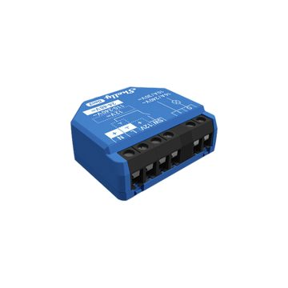
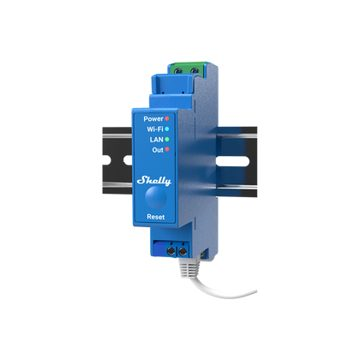
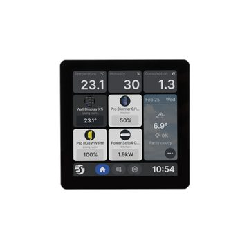
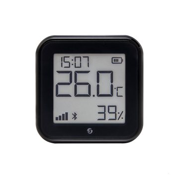
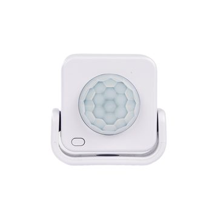
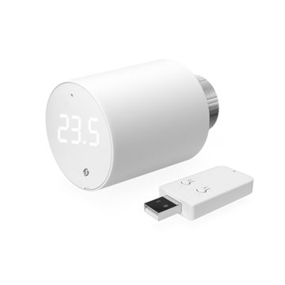
Un sistema sueco de malla Bluetooth para la iluminación. Los módulos se comunican entre sí y refuerzan la red, funciona sin conexión a internet y se configura en la app de Plejd. Hace falta una pasarela para controlarlo desde fuera. No hay soporte oficial de Home Assistant, solo soluciones de la comunidad.
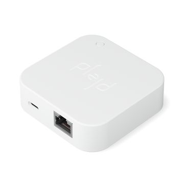
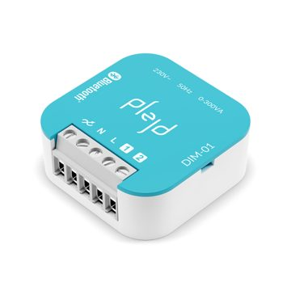
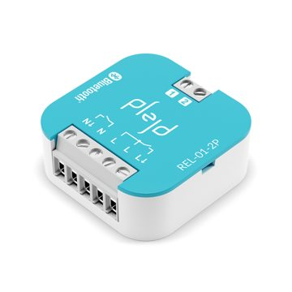
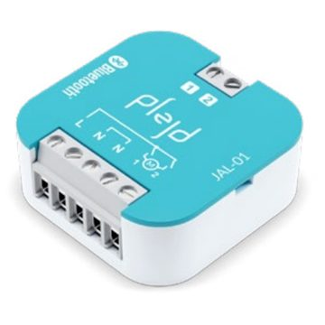
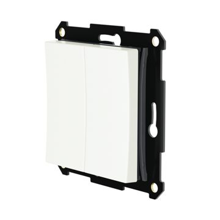
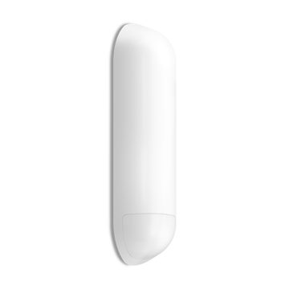
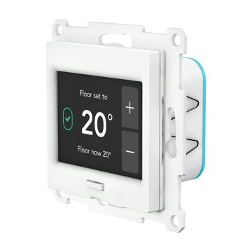
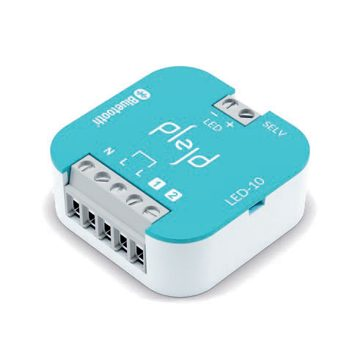
Una plataforma abierta con muchos fabricantes, por ejemplo BSEED. Conviene cuando el precio importa y el aspecto de los interruptores de diseño es importante: interruptores de cristal, enchufes con USB y termostatos. Funciona con Zigbee y Home Assistant. La certificación, la calidad y la garantía deben comprobarse para cada producto.
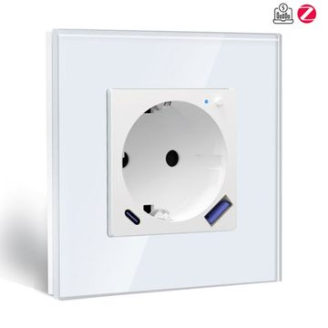
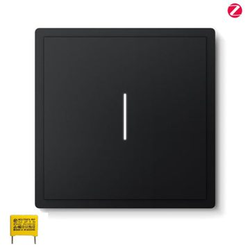
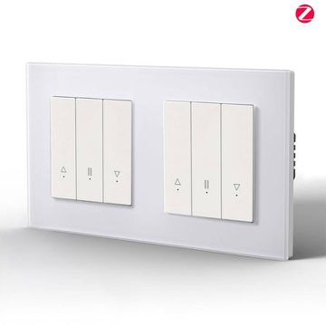
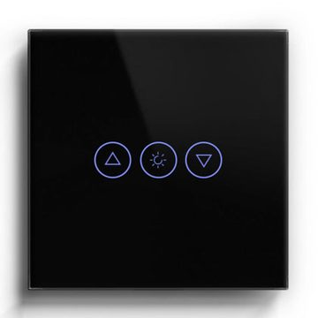
Las imágenes proceden de los catálogos de los fabricantes y distribuidores. Las marcas y las imágenes pertenecen a sus propietarios.
Siete habitaciones, trece grupos de luces con tres regulables, un medidor de energía en el cuadro y sensores de movimiento y temperatura en cada habitación. Interruptores y cableado sin cambios; los módulos van en las cajas del techo.
Precios con IVA de tiendas islandesas en otoño de 2026, sin mano de obra. El precio real depende de la casa y de lo que aparezca al revisarla.
Snjallheimilið es Davíð, en Akureyri. Años de experiencia en instalaciones eléctricas, formación en informática y redes, y una casa propia que lleva años siendo inteligente, con software que él mismo escribe y publica como código abierto para Home Assistant.
Las soluciones se basan en módulos Shelly: se colocan en las cajas existentes, funcionan en la red local sin nube y hablan con Home Assistant, Google y Apple. Sin suscripción y sin atarte a una marca más allá de lo que tú mismo elijas.
La conexión a la instalación eléctrica de la casa la realiza un electricista autorizado conforme a la normativa eléctrica islandesa. Snjallheimilið se encarga del diseño, del material y de la configuración del software.
¿Una pregunta, una casa que quieres que revisemos, o simple curiosidad? Escribe unas líneas. Si prefieres un rango de precio primero, empieza por la estimación y tus respuestas irán con la consulta.